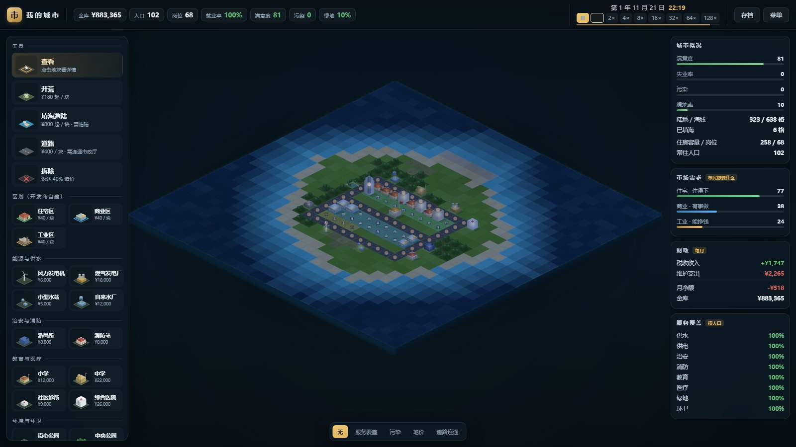

telson
telson

账号与存档
登录一次，存档跟着你走
注册即可保存 3 个云端存档槽，自动存档同步到服务器；不登录也能玩，进度存在本机浏览器里。
登录 / 注册
云端存档
尚未登录。登录后这里会列出你在云端的存档，可以直接读档继续。
- 3 个手动存档槽 + 1 个自动存档
- 服务器只收存档数据，不记录你的操作过程
- 密码用加盐哈希存储，绝不明文落库
怎么玩
你是市政府，不是开发商
你不直接盖楼。你只做决定：哪儿开荒、哪儿修路、哪儿划成住宅、水和电铺到哪。剩下的交给市场。
开局四步
- 开荒：草地/沙滩/林地/缓丘，建设前先清理
- 修路：路必须连到市政厅，否则没人来
- 通水电：小型水站 + 风力发电机，覆盖范围内建筑才运转
- 划区：住宅 / 商业 / 工业，需求满足后自动长楼
会自己长大的城市
- 住宅区会长出低层住宅楼 → 多层公寓 → 高层住宅
- 商业区从临街商铺长到小型超市、大型综合体
- 工业区从小型工厂到物流仓库、重工业园区
- 没人住、没配套的建筑会荒废，地价也会跟着掉
海是边界，也是机会
- 填海造陆必须紧邻陆地，不能凭空造岛
- 造价按离岸深度递增：¥800 → ¥1,500 → ¥2,200 …（≥6 格封顶 ¥5,000）
- 新填的地先铺路才能接进城市
- 沿海地块地价更高，沙滩次之
时间与昼夜
- 1× 速度下 5 分钟走完一天
- 支持 0 / 1 / 2 / 4 / 8 / 16 / 32 / 64 / 128 倍速
- 天黑后路灯与窗户亮起，城市换一张脸
- 经营模式要算账（赤字不能动工）；沙盒模式资金无限
技术做法
手写 Canvas，没有框架
- 种子生成：极坐标 + 椭圆拉伸 + 角向谐波 + 海岸噪声，同种子逐字节一致
- 2.5D：等距投影 + 体块建筑三面分色，地形整层离屏缓存
- 昼夜：合成图层压暗 + 灯光加亮，静态渐变烘成位图
- 性能：最大岛一帧约 16.5ms（无 GPU 的软件光栅化下实测）
- 后端正经做：用户注册登录、云端存档槽、密码加盐哈希
- 零依赖前端：HTML + CSS + 原生 JS，双击就能跑
- 离线优先：没网也能玩，登录后才同步到云端
- 完全确定：同一份存档 + 同一个种子 = 同一座城